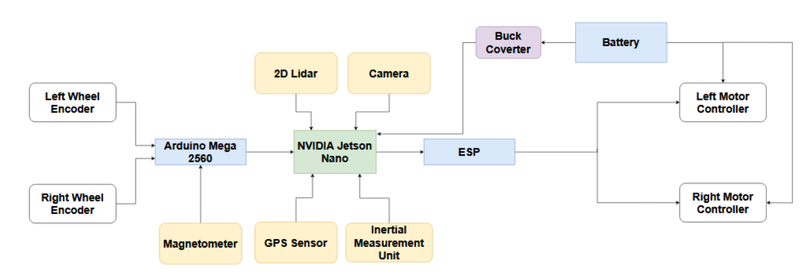
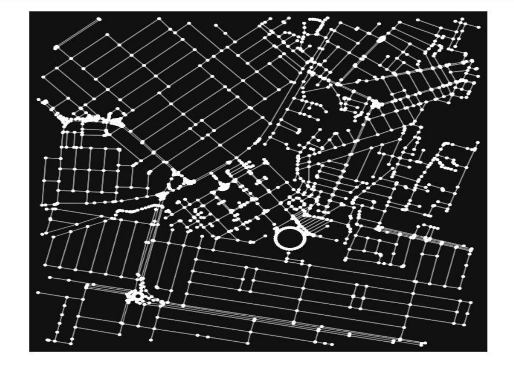
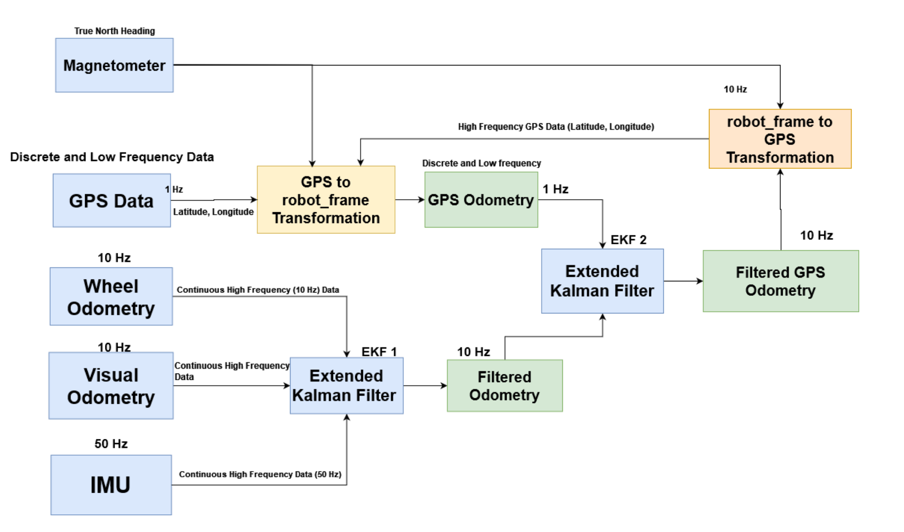

AI-Powered Autonomous Delivery Vehicle
A self-driving last-mile delivery robot designed to navigate the LUMS campus using mapping, sensor fusion, perception, and local obstacle avoidance.
Best Final Year Project 2024, LUMS Department of Electrical Engineering

Overview
We developed a fully autonomous delivery vehicle capable of navigating across the LUMS campus, from Visitor's Parking to Free Parking. The project addressed last-mile delivery through four connected systems:
- Reliable onboard hardware and motor control
- GPS-based localization and campus mapping
- Semantic segmentation and obstacle detection
- Sensor fusion for stable, high-frequency position estimates
- Platform
- NVIDIA Jetson Nano and ROS
- Coverage
- 5 km campus map
- Perception
- LiDAR and Intel RealSense D455
- Localization
- GPS, IMU, odometry, magnetometer, and dual EKF
Hardware
The vehicle used a motorized rear-wheel chassis with free-turning front wheels. A custom PCB secured the connections and reduced sensor noise, while a 24 V battery and buck converter supplied the onboard computer and motor-control electronics.
- NVIDIA Jetson Nano: onboard perception, localization, and navigation
- Intel RealSense D455: depth perception and obstacle detection
- SLAMTEC LiDAR: 360-degree ranging for mapping and obstacle avoidance
- GPS, IMU, and magnetometer: position, orientation, and heading
- Wheel encoders: velocity feedback and wheel odometry
- Motor controller and ESP: forward, reverse, and safety control

Localization and mapping
We created a GPS-based global map of the LUMS campus. Nodes represented GPS coordinates and edges represented the distance between connected locations. The vehicle matched its current GPS position to the nearest map node, calculated a route, and converted the resulting waypoints into its local reference frame.
A PID controller guided the vehicle along the route. We evaluated Dijkstra, A*, breadth-first search, and rapidly exploring random trees for route and motion planning.

Sensor fusion
GPS updates were low-frequency and could jump between positions, while odometry and IMU data arrived more frequently but accumulated drift. We aligned the GPS coordinates with the robot's heading using the magnetometer, then fused wheel odometry, visual odometry, and IMU measurements through an Extended Kalman Filter.
A second filter combined that high-frequency local estimate with GPS odometry. The resulting position estimate remained smooth while retaining global accuracy.

Navigation and perception
Global navigation
- Calculated the route from start to destination
- Generated GPS waypoints for campus navigation
- Used graph-search and sampling-based planning methods
Local navigation
- Responded to nearby obstacles in real time
- Used depth data for collision avoidance
- Used semantic segmentation to identify driveable road surfaces
Pretrained Cityscapes models did not transfer well because LUMS roads lack conventional lane markings and standard traffic infrastructure. We collected and annotated a custom LUMS road dataset, then trained a convolutional network for the campus environment and optimized inference for the Jetson Nano with TensorRT.
Outcome
The final system integrated global planning, local perception, sensor fusion, and embedded control into a working autonomous campus rover. The project received the Best Final Year Project 2024 award from the LUMS Electrical Engineering Department.